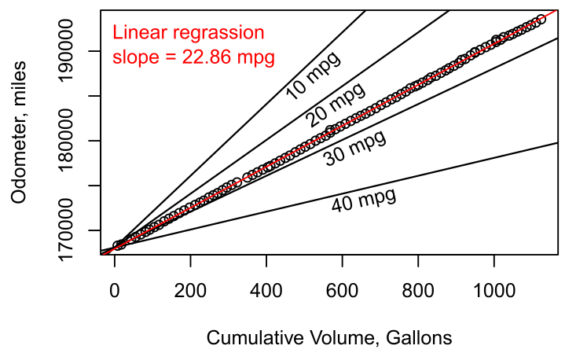
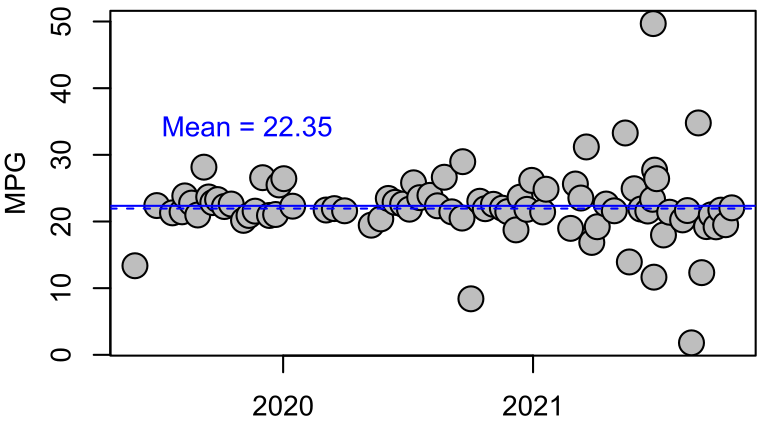
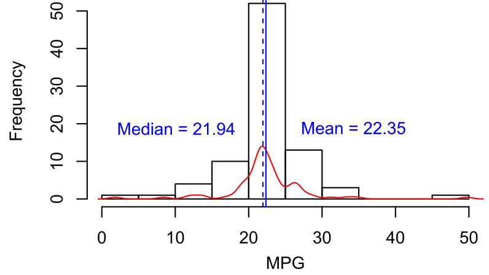
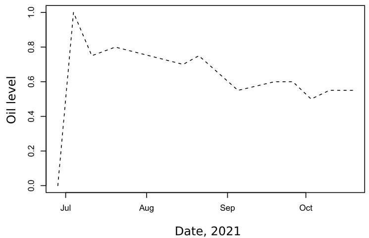
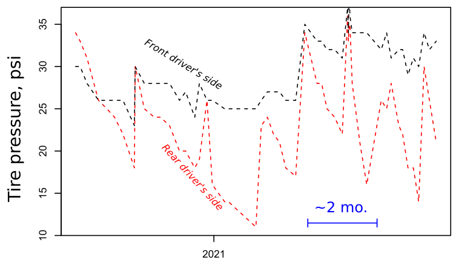
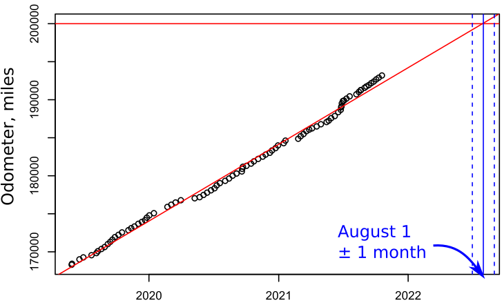

Some time around late 2018 or early 2019, at the age of – well, some time in my late 20’s – I purchased my first car: a 1998 Toyota Camry V6 LE with roughly 170k miles for $1300. The seller was a foreign national who I met through a mutual friend via an email list for international students. Here’s a picture of the car circa 2021:
Since I purchased the car, I have been fastidiously keeping notes on my fuel consumption and maintenance costs in a notebook which lives in the driver’s side door. The format of my notes has wandered a bit over the years, but the data are pretty robust.
Here are the gas prices I have been subjected to (below). Mostly I refill my tank at the Joco Mart (Exxon) near the on-ramp to Rte. 460 in northern Christiansburg, but some of my notes are from road trips as far south as Atlanta and as far north as Syracuse, NY. Generally the geographic variability is negligible compared to the wander in gas prices over time.
Since I purchased the car, I have driven roughly 25,000 miles and consumed around 1,200 gallons of regular unleaded gas – that’s probably somewhat larger than the volume of the car itself. That means I’m getting about 20 mpg, which is about right for my car according to fueleconomy.gov. Not great; not terrible! Here is a plot of the cumulative gas consumption vs odometer reading.
Assuming that I always fill my tank to full (probably a fair assumption), I can calculate my mileage after any given trip to the gas station. Here is my fuel consumption rate (mpg) over time (below). What are the outliers? Does it look like my car is losing efficiency? Only time will tell! My mechanic says I don’t need to worry until the efficiency drops to around 18 mpg or so...
The horizontal lines in the plot above are from the following histogram of my calculated mileage for each trip to the gas station:
Recently I have noticed that my engine is burning oil, so I have been trying to “eyeball” the oil level on my dipstick during each visit to the gas station. Here is a plot of some of the data from late 2021 (below), where 0 and 1 correspond to the low and high markings on the dipstick respectively. It looks like I’ll be topping the oil off once every 4 to 6 months.
In early 2020, I started tracking my tire pressure using an analogue pressure gauge. It appears that one of my tires is leaking air faster than the others. The plot below shows tire pressure (psi) over time. The black line is the average pressure of my three good tires, and the red line shows the pressure of my rear driver’s side tire. The x-axis of the plot is poorly labeled, but I have been refilling my tires about once every two months.
Finally, I am curious about about when my car will go over 200k miles. In lieu of a rigorous linear model with a calculated uncertainty envelope, I have “eyeballed” the date using a line drawn with the lm() function in R until I can get the predict() function to work with the Date-formatted column in my data. It looks like the odometer will go over 200k around August 1 plus or minus a month or so (shown by the dashed vertical lines below).
Here’s the Github repository I have been updating periodically: https://github.com/moorelr/98camry